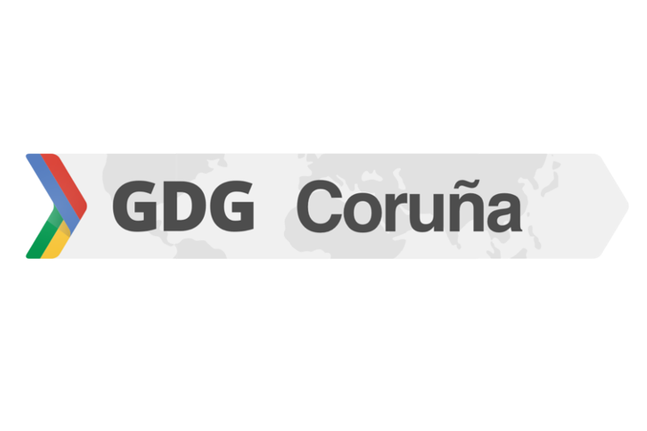
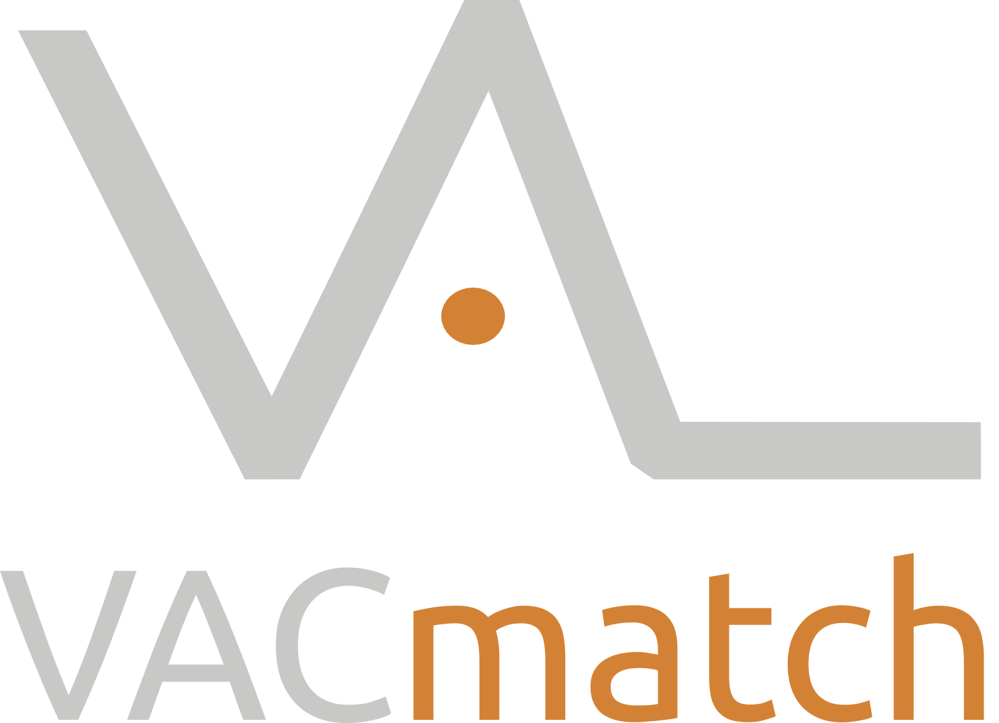
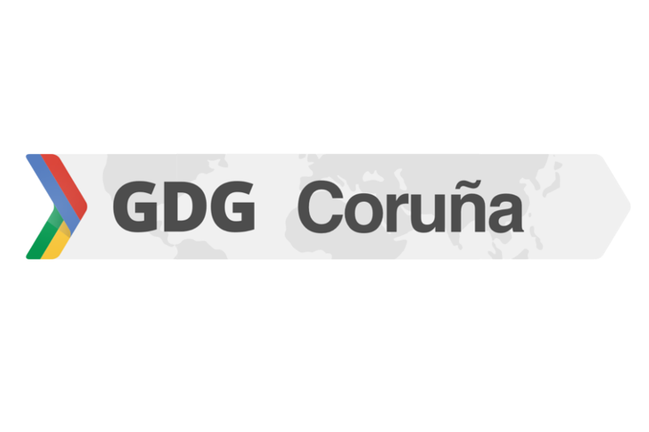
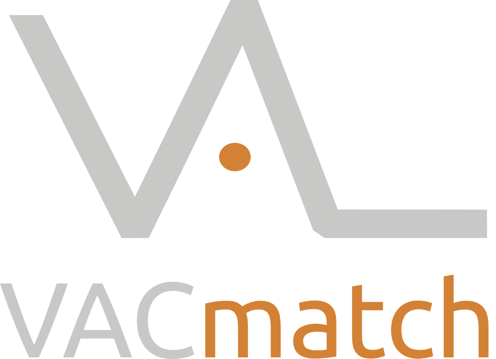

Sed hackers!
castrinho8.github.io/be-hackers
Creative Commons BY-SA
Basada en la charla:
Sed hackers! de
Víctor Terrón
que tiene una licencia
Creative Commons Atribución-Compartir igual 4.0 Internacional.

Pablo Castro Valiño
@castrinho18
Estudiante de Ingeniería informática
Secretario de GPUL
 





El futuro profesional de muchos
Consultoria
Indra, Everis y demás cárnicas
Startups y emprender
Lo que te cuentan
La realidad
Consejos
- Con xeito
- Curras muchiiisimo
- Cuidado con las subvenciones y el mensaje de que emprender es happy world
- Aprendes mucho y de lo que quieres
- Conoces gente muy interesante
1º consejo
Aspira a trabajar en un sitio guay
Horarios flexible, teletrabajo, sin traje, empresa horizontal...
Igalia, CartoDB, Valve...
Hay sitios intermedios que también molan para empezar
Imatia, Trabe, Trileuco, Mobgen...
"Para currar en un sitio de verdad
¡Hay que ser un hacker!"
Hacker
"Persona que disfruta explorando los limites de lo posible.
Puede ser modificando software o" hardware, incluyendo construir, reconstruir, modificar y crear software (u otra cosa), con el
objetivo de mejorarlo, hacerlo más rápido, darle nuevas funcionalidades o hacer que haga algo para lo que no estaba destinado inicialmente."
Wikipedia dixit
La carrera
Vais a ver muchas cosas feas y alguna guay
Profesores flojillos, los buenos son escasos (aprovechadlos mucho)
Aprendereis un poco de aquí y otro de allí
"El mundo ya está lleno de gente que se limitó a aprobar asignaturas, incluso con buena nota".
2º consejo
Aprovechad el tiempo,
¡HACED COSAS!
Muevete!
- Inglés everywhere
- GNU/Linux como SO y software libre
- Meteros en asociaciones y fregados
- Participa en un proyecto de Software Libre
- GitHub/GitLab es tu curriculum
1. Inglés
No importa la sintaxis -> importa entenderte
Lee documentación, videos tecnicos en youtube, ve a conferencias (FOSDEM)
"El expediente sólo sirve para que te den becas"
2. Software libre + 3. Asociaciones
GPUL en este caso ;)
GNU/Linux
Software/Hardware/Cultura Libre
Aprender mogollón
Buen rollo
Conferencias internacionales
Charlas y talleres
Algún que otro viaje
Las empresas de verdad lo valoran mucho, el 80% de mis entrevistas han ido sobre esto
Conoces gente muy top (agenda) KDE, startups chulas, Google...
Pierdes la verguenza, miradme a mi dando una charla
4. Métete en un proyecto de software libre
No hay nada que impresione más en un currículum
Encontrad un proyecto que os guste, y empezad poco a poco
Parches muy pequeños al principio
Summers Of Code
Google Summer Of Code
Outreachy
Rails Girls Summer Of Code
ESA Summer Of Code
...
5. GitHub/GitLab es tu nuevo currículum
Olvida svn y aprende Git
Publica tu TFG, prácticas, presentaciones, landing pages...
Para las empresas guays, es lo único que importa
Conclusiones
No os conformeis con la consultoria: !Aspirad a más!
No dejeis de aprender:
Hackatones, charlas, conferencias...
Se activo y no solo pasivo:
Imparte charlas, organiza eventos
Participa en un proyecto de Software Libre
thanks!
@castrinho18 | Pablo Castro
pcastro@gpul.org